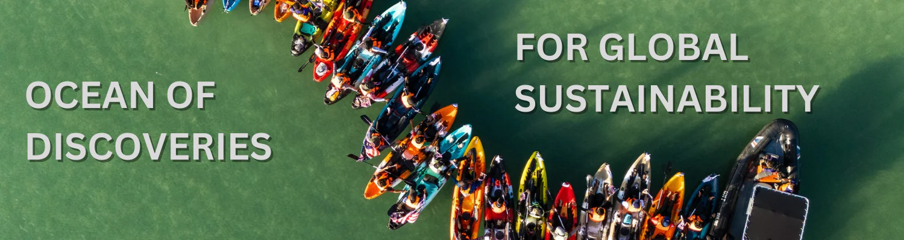

About UMT
►
Vision & Mission
History of UMT
Logo & Corporate Image Guidelines
Organization Chart
University Governance
Departments
Media Center
Career with UMT
Contact Us & Feedback
Study
►
STEM Foundation & Diploma
Bachelor
Master & Doctorate
Research
►
UMT Wise
- Institute of Oceanography and Environment (INOS)
- Institute of Tropical Aquaculture & Fisheries (AKUATROP)
- Institute of Climate Adaptation and Marine Biotechnology (ICAMB)
Institute of Tropical Biodiversity and Sustainable Development (IBTPL)
Centre of Research Field Service (CRAFT)
- Innovation and Commercialization Centre (ICC)
Office of Research Management (RMO)
Publisher
Studnet & Campus Life
►
Academic Calendar
►
International Student
Check Application Status
Scholarship & Financial
Assistance
Student Support
Academic Procedures & Regulations
Universities & University
Colleges Act
FOUNDATION & DIPLOMA SEMESTER 1 2025/2026
FOUNDATION & DIPLOMA SEMESTER 2 2025/2026
BACHELOR SEMESTER 1 2025/2026
BACHELOR SEMESTER 2 2025/2026
FOUNDATION & DIPLOMA SHORT SEMESTER 2025/2026
BACHELOR SHORT SEMESTER 2025/2026

Admission to UMT
Asasi STEM
All programes
Bachelor
All programes
Master & Doctorate
All programes
Life @ UMT
RESEARCH INSTITUTES